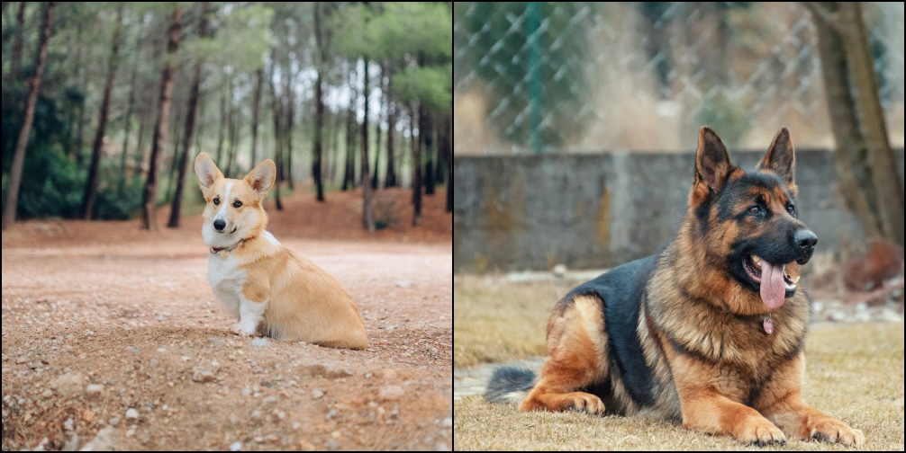
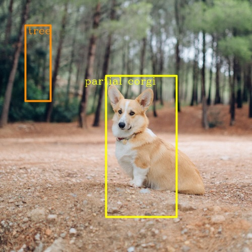
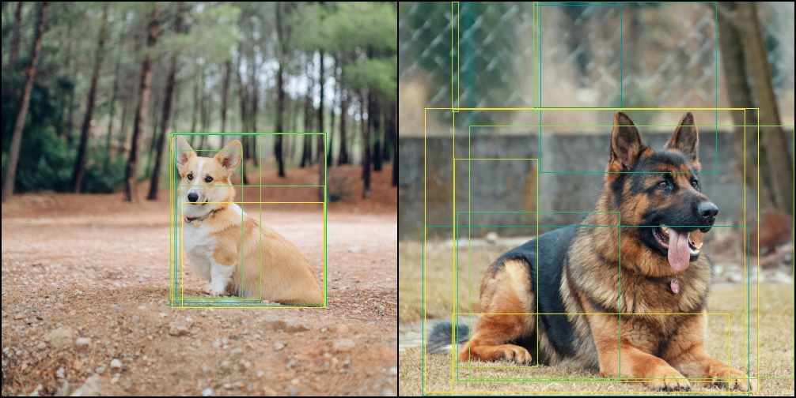
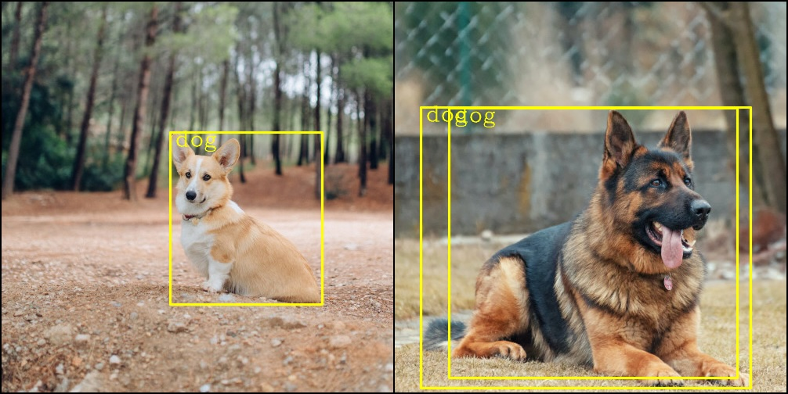
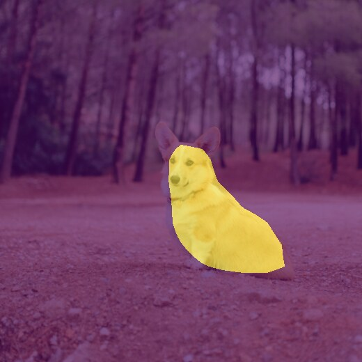
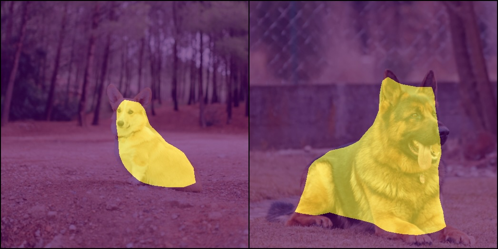
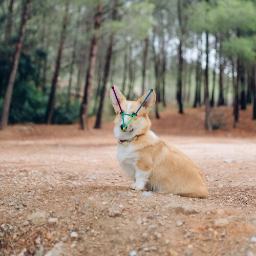

vignettes/examples/visualization-utilities.Rmd
visualization-utilities.RmdThis article walks through the drawing helpers shipped with
torchvision (vision_make_grid(),
draw_bounding_boxes(),
draw_segmentation_masks() and
draw_keypoints()) and shows how to feed them the output of
a pretrained detection or segmentation model. It follows the Visualization
utilities tutorial from PyTorch.
The code below is not evaluated when the website is built, because it downloads around 250 MB of model weights. Every figure was produced by running it.
library(torchvision)
library(torch)
gallery <- "https://raw.githubusercontent.com/pytorch/vision/main/gallery/assets/"
dog1 <- base_loader(paste0(gallery, "dog1.jpg")) %>% transform_to_tensor()
dog2 <- base_loader(paste0(gallery, "dog2.jpg")) %>% transform_to_tensor()vision_make_grid() tiles a batch of images into a single
tensor, which is a quick way to eyeball a batch coming out of a
dataloader().
grid <- vision_make_grid(dog1, dog2, per_row = 2)
tensor_image_browse(grid)
draw_bounding_boxes() expects an (N, 4)
tensor of boxes given as (xmin, ymin, xmax, ymax) in
absolute pixel coordinates.
boxes <- torch_tensor(rbind(
c(50, 50, 100, 200),
c(210, 150, 350, 430)
), dtype = torch_float())
boxed <- draw_bounding_boxes(dog1, boxes,
labels = c("tree", "partial corgi"), font_size = 18,
colors = c("darkorange", "yellow"), width = 5)
tensor_image_browse(boxed)
Boxes are usually not hand written but predicted. We will use the
RF-DETR model to do so. RF-DETR expects ImageNet-normalized inputs, so
we assemble two images in a batch and then normalize.
Note: The model is able to detect the dogs on unnormalized input, but
with far lower confidence: the corgi confidence scores in the previous
image drops from 0.67 with normalization down 0.28 without.
norm_mean <- c(0.485, 0.456, 0.406)
norm_std <- c(0.229, 0.224, 0.225)
batch <- list(dog1, dog2) %>%
torch_stack() %>%
transform_normalize(norm_mean, norm_std)
model <- model_rfdetr_base(pretrained = TRUE, num_queries = 40)
model$eval()
detections <- with_no_grad(model(batch))$detectionsRF-DETR resizes the batch to its own working resolution internally
and maps the boxes back to the coordinates of the images you passed in,
so images can be drawn straight onto the original tensors. Each element
of detections holds boxes, labels
and scores sorted by decreasing score.
Let’s first draw the objects detected with raw model output.
tensor_image_browse(vision_make_grid(
draw_bounding_boxes(dog1, detections[[1]]$boxes),
draw_bounding_boxes(dog2, detections[[2]]$boxes)
))
We can see that too many boxes are detected. RF-DETR Model default to
300 object detection, but we reduced it via the num_queries
parameter.
Let’s filter them based on their associated confidence score.
We will create a convenience function that keeps the confident ones,
and turn the label indices into readable names out of
coco_classes().
draw_high_confidence_bboxes <- function(image, detection, width = 4, font_size = 25, ...) {
keep <- as.logical(as.array(detection$scores > 0.2))
draw_bounding_boxes(
image,
detection$boxes[keep, , drop = FALSE],
labels = coco_classes(as.integer(detection$labels[keep])),
width = width,
font_size = font_size,
...
)
}Now let’s draw again
tensor_image_browse(vision_make_grid(
draw_high_confidence_bboxes(dog1, detections[[1]], color = "yellow"),
draw_high_confidence_bboxes(dog2, detections[[2]], color = "yellow")
))
model_fcn_resnet50() scores every pixel against the 21
PASCAL VOC classes. Its pretrained weights are evaluated at 520 pixels,
so resize before normalizing, and keep the resized images around to draw
on: masks and image must share their height and width.
resized <- list(dog1, dog2) %>%
torch_stack() %>%
transform_resize(size = c(520, 520))
batch <- resized %>%
transform_normalize(norm_mean, norm_std)
model <- model_fcn_resnet50(pretrained = TRUE)
model$eval()
scores <- with_no_grad(model(batch))$outscores is a CPUFloatType{2,21,520,520}
tensor. Handeling such a tensor, draw_segmentation_masks()
takes the argmax() over the class dimension and colors each
class that appears.
segmented <- draw_segmentation_masks(resized[1,..], scores[1, ..], alpha = 0.6)
tensor_image_browse(segmented)
To highlight a single class instead, build the boolean mask yourself.
dog is the 13th of the 21 classes, and softmax turns the
scores into per-pixel probabilities that can be thresholded.
tensor_image_browse(vision_make_grid(
draw_segmentation_masks(resized[1,..], scores[1, ..], alpha = 0.6),
draw_segmentation_masks(resized[2,..], scores[2, ..], alpha = 0.6)
)
)
draw_keypoints() takes an (N, K, 2) tensor
holding the (x, y) location of K keypoints for
each of N instances. torchvision has no pose estimation
model to feed it (model_mtcnn() predicts five landmarks,
but only on human faces), so the keypoints here are annotated by hand:
the two ear tips, the two eyes and the nose of the corgi.
connectivity lists the pairs of keypoint indices to join
with a line. Each line is drawn in the color of the keypoint it starts
from, so leave colors at its default or pass one color per
keypoint.
keypoints <- torch_tensor(rbind(
c(220, 171),
c(296, 176),
c(239, 222),
c(262, 226),
c(242, 250)
), dtype = torch_float())$reshape(c(1, 5, 2))
connectivity <- list(c(1, 3), c(2, 4), c(3, 4), c(3, 5), c(4, 5))
posed <- draw_keypoints(dog1, keypoints, connectivity = connectivity,
radius = 6, width = 3)
tensor_image_browse(posed)